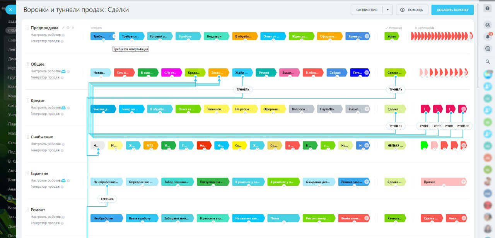
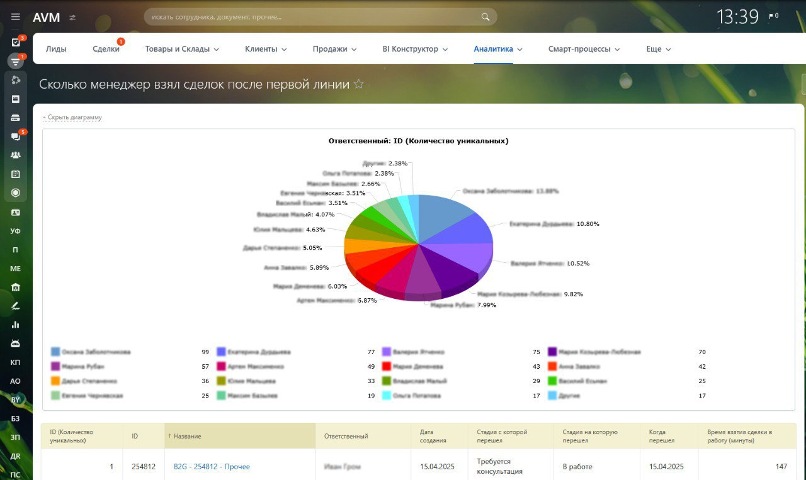
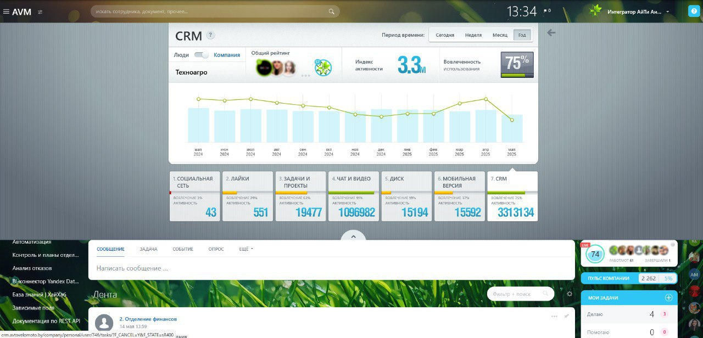
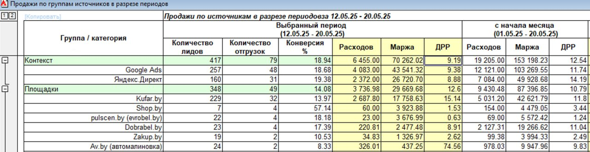

В три раза выросли продажи и втрое подешевела реклама: история «ТехноАгро»
Мультибрендовая компания по продаже сельхозтехники росла быстрее, чем успевали упорядочиваться процессы: клиенты хранились в десятках таблиц, продажи — в 1С, маркетинг и сервис жили отдельно. Вместе с командой «ТехноАгро» мы собрали всё это в Битрикс24 — с воронками по типам обращений, сквозной аналитикой и связкой с 1С.
Компания росла быстрее, чем процессы
«ТехноАгро» — мультибрендовая компания, которая продаёт сельхозтехнику всех видов и размеров. В штате более 80 человек, каждый день — сотни звонков и заказов. Когда бизнес начал быстро расти, компания столкнулась с хаосом: клиенты терялись, данные хранились в десятках таблиц, а процессы «жили своей жизнью».
Всерьёз о автоматизации в компании задумались ещё в 2017 году. Уже тогда «ТехноАгро» была немаленькой, но работала по старинке: информация разрознена, процессы не связаны между собой. Клиенты — в десятках гугл-таблиц, продажи — в 1С, маркетинг и сервис — в отрыве от остальных отделов. Особенно не хватало сквозной аналитики: откуда приходят клиенты, как они конвертируются, кто из менеджеров хорошо отрабатывает заявки и где теряются звонки.
О том, как проходило внедрение и в чём оказался секрет роста, рассказывает Вадим Болдовский, заместитель директора по финансам и развитию «ТехноАгро».
Что нужно было получить на выходе
Список задач компания сформулировала ещё до выбора платформы.
 Объединить всю информацию в одном пространстве и интерфейсе
Объединить всю информацию в одном пространстве и интерфейсе- Сделать процессы прозрачными и понятными для сотрудников
- Выстроить путь клиента от первого касания до покупки
- Получить данные для регулярной и понятной аналитики
Сначала рассматривали разные системы — была даже идея разработать свою. В итоге подрядчик, который тогда занимался телефонией «ТехноАгро», посоветовал присмотреться к Битрикс24. Выбор выглядел логичным: сайт компании уже работал на «1С-Битрикс: Управление сайтом», бухгалтерия велась в 1С — всё в комплексе подтолкнуло к этой платформе.
От «всё и сразу» — к работе по этапам
В процессе выбора «ТехноАгро» общалась с несколькими интеграторами и в итоге остановилась на команде «АйТи Аналитикс»: получилось не формально «сделать и забыть», а выстроить систему, которая работает и приносит пользу.
«Внедрение — это совместная работа. Интегратор становится частью команды на время проекта: приносит экспертизу по платформе, опыт выстраивания процессов, знание типовых ошибок. Вы со своей стороны даёте исчерпывающую информацию о бизнесе, понимание внутренних процессов, задач и целей». Вадим Болдовский, «ТехноАгро»
Первые этапы дались непросто. Сказывались завышенные ожидания, размытые задачи и непонимание возможностей системы: хотелось всё, сразу и быстро — чтобы Битрикс24 разом решил все проблемы. Не было понимания, что двигаться нужно поэтапно, от простого к сложному. Масштабные задачи, которыми пытались охватить всё сразу, превратились в квест, а команда сопротивлялась изменениям.
Дальше пошла планомерная работа. Вместе с «АйТи Аналитикс» отказались от идеи «всё и сразу» и разбили внедрение на понятные этапы, завели регулярные встречи с командой интегратора — чтобы держать темп и не терять фокус, — и сами начали погружаться в систему. Отдельным блоком шло обучение сотрудников: записывали видеоинструкции, писали гайды, объясняли, зачем всё это нужно и как с этим работать, чтобы у команды не было страха и отторжения.
CRM заработала — команда стала дышать свободнее
Постепенно сложилась структура, появилась логика, заработали полезные сценарии.
Все обращения клиентов классифицируются по типу и распределяются по своим воронкам. У каждой воронки — свой ответственный менеджер. Клиентов и информацию по сделкам перестали терять.

В воронках настроены этапы и автоматические напоминания о заказах. Теперь легко найти данные по любому заказу и его статус.

Компания фиксирует много показателей по процессу продажи. Один из важных — сколько сделок менеджеры первых линий передали в отдел продаж.

Сегодня в «ТехноАгро» задействованы практически все модули Битрикс24, а CRM ежедневно пользуется 75% сотрудников.

Что изменилось в цифрах
Рекламные расходы сократились почти в три раза
Чтобы понять, какие каналы работают, а какие нет, разметили UTM-метками все 50+ рекламных каналов, подключили SIP-телефонию от А1 с отдельными номерами на каждый канал и связали всё с 1С. Теперь каждая сделка фиксируется с точным источником рекламы, расходами и прибылью.
Доля рекламных расходов от маржи: 30% до внедрения → 15% через год → 9% через два года. При бюджете около 1 млн BYN в год это рост эффективности рекламы втрое.

Продажи выросли в три раза без резкого роста заявок
За счёт аналитики и правильной настройки CRM конверсия из лида в продажу поднялась с 9% до 30% — то есть продажи выросли втрое при умеренном росте числа заявок. Что помогло:
- Отсеяли нецелевые лиды
- Настроили работу с дубликатами, чтобы не терять клиентов
- Проанализировали загрузку сотрудников и укомплектовали штат нужными компетенциями
- Сегментировали лиды по источникам и расставили приоритеты обработки
- Запустили систему повторных касаний с клиентами
- Добавили SMS-уведомления для «дожима» и информирования клиентов

«Внедрение CRM — это не кнопка "всё готово". Это процесс, который требует времени и участия. Со временем мы поняли: если идти поэтапно, делать с умом и под конкретные задачи, результат приходит быстрее, чем ожидаешь». Вадим Болдовский, «ТехноАгро»
Планы «ТехноАгро»
Сейчас в приоритете — BI-аналитика: компания хочет видеть, что происходит на сайте, как клиенты взаимодействуют с менеджерами, какие товары в спросе и где может теряться выручка. Уже изучают инструменты с искусственным интеллектом — смотрят, как встроенный AI-помощник CoPilot помогает с текстами, описаниями и коммуникациями. В планах — усилить аналитику по заявкам, адаптировать инструменты под мобильную работу и развивать цифровую культуру внутри команды.
Вадим Болдовский также рассказывал об этом опыте вживую — на Битрикс24 Кейс-Баре, который «АйТи Аналитикс» провела на встрече проекта «Содружество».
Кейс подготовлен командой Битрикс24 по итогам разговора с «ТехноАгро». Полная версия — на официальном сайте Битрикс24: bitrix24.by/cases/keys-kompanii-ooo-tekhnoagro.php ↗
Хотите так же навести порядок в продажах?
Проведём бизнес-анализ, выстроим воронки под ваши процессы, подключим телефонию и 1С и настроим сквозную аналитику — поэтапно, без «всё и сразу».